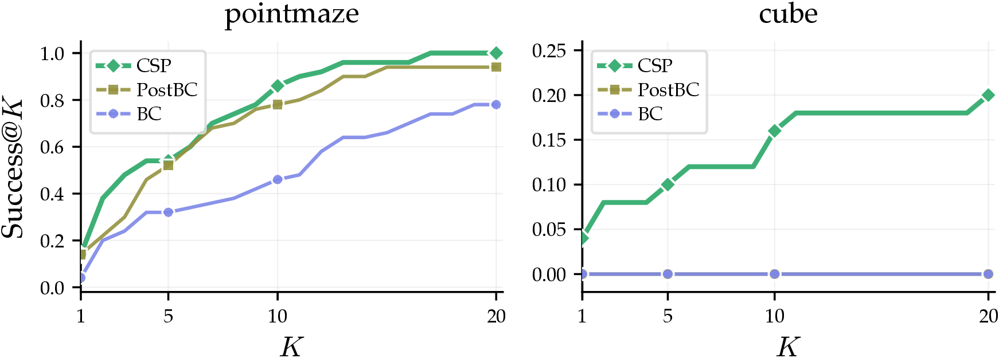

Simulation Results
Success@K — the fraction of out-of-distribution states where at least one of K base-policy rollouts succeeds — directly measures action coverage (Eq. 3). On pointmaze-giant and cube-single, CSP exceeds BC and PostBC at every K, with the gap widest on cube-single where both baselines remain at zero.

CSP delivers coverage before RL begins. On cube-single, BC and PostBC remain near zero while CSP stays well above at every K: the action coverage RL needs to fine-tune efficiently.
We compare TMRL against several state-of-the-art baselines. TMRL outperforms or matches all baselines across four simulation tasks.
pointmaze-giantcube-single
Simulation RL success rates. Across OGBench (pointmaze-giant, cube-single) and LIBERO (libero-goal, libero-90), TMRL approaches 100% while baselines lag; only TMRL reaches non-trivial success on the long-horizon libero-90.